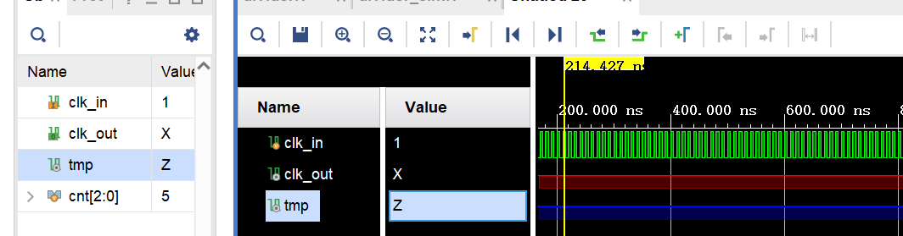
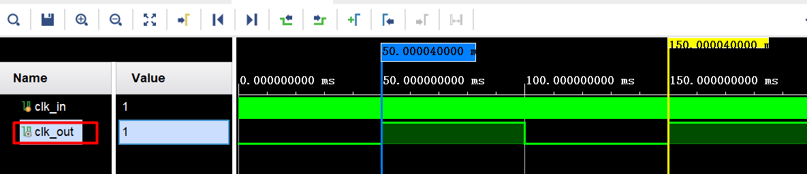

仿真调试常用功能
1、仿真工具快捷操作
1.1 工具栏仿真功能操作
如上图，在菜单栏下面有一排工具栏，将鼠标放上去会有功能提示，从左到右的功能分别如下：
- Restart：清空波形数据，从0时刻开始，需要再执行Run For；
- Run All：一直运行仿真到处理完所有event或手动停止仿真；
- Run For：按照设定的时间运行仿真，每点击一次都在之前的基础上再运行指定时长；
- Step：运行仿真直到下一个HDL状态；
- Break：暂停仿真运行；
- Relaunch Simulation：重启仿真器进行仿，当修改了源代码或者添加了内部信号之后，可以直接Relaunch而不用关闭仿真窗口。
1.2 波形缩放
熟练使用Zoom Fit（最适波形）、波形缩小、放大功能，一般先点击Zoom Fit将波形调整到最合适的状态。
如果需要大范围移动波形，点击波形上方工具条中的缩小波形至合适程度，然后再拖动波形下方的滚动条至想观察的时刻附近，单击波形将游标落在这一时刻处，再点击波形上方工具条中的放大波形至你可以观察清楚信号的程度。
1.3 多位宽信号不同进制显示
对于多位宽信号，可以根据需要设置为二进制、十六进制、八进制、十进制等不同的进制。
1.4 多位宽信号快速定位
有时候需要快速找到一个多位宽信号等于某个值的时刻，建议用值查找（Find Value）的方式去找，不要用鼠标拖着信号下面的滚动条用眼睛去找，操作方式如下，需要注意Radix是否一致，输入值之后按enter键即会跳到对应值的边沿。
1.5 信号标记
在波形分析过程中，及时给你认为重要的时刻做标记（Marker）。做标记的方法很简单，在波形上你关注的时刻处左击，此时游标（Cursor）将出现在你关注的时刻，点击波形上方工具条中的，就做好了一个标记。之后无论你是直接移动波形至Marker处还是使用波形上方工具条中的快速定位到标记处，都会大幅度提高定位效率。
1.6 将内部信号添加到波形窗口
仿真窗口默认值显示仿真顶层模块中module的输入输出信号，但debug有时需要查看内部信号的变化。按如下操作添加内部信号的波形窗口。
会发现新加入的信号没有波形数据，需要重新运行仿真才会有，点击工具栏的最右侧的Relaunch Simulation按钮即可重新仿真。
也可以将项目的设置改为仿真一次把所有信号都记录下来，可方便分析内部信号。具体操作如下图所示，打开全局settings,在右部选择“Simulation”标签，然后在下面找到“xsim.simulate.log_all_signals”选项，将其勾选上，点击OK保存配置。
该设置使得调试更方便，但也使得单次仿真运行时间比不配置该选项要长，记录的数据也更多，日志文件更大，因为一次仿真需要记录所有信号的仿真数据。建议配置上，对分析模块内部信号更方便。
上面介绍了常用的仿真技巧，更多的波形分析操作需要在实践中学习。
2、波形异常类错误调试
波形异常类错误是指那些不需要分析电路设计的功能直接观察波形图就能判断的错，比如波形中信号出现“X”了。通常分为下面5类，指导书只介绍前面2类。
（1）信号为“X”；
（2）信号为“Z”；
（3）波形停止；
（4）越沿采样：上升沿采样到被采样数据在上升沿后的值；
（5）其他，波形怪异：仿真波形图怪异，与设计的电路功能无关的错误。
（1）信号为“X”
“X”表示不定值，往往是由于以下两个原因之一导致的。
（a）RTL里声明为reg型的变量，从未被赋值或被错误赋值。比如下面计数器的输出，clk_out是reg型变量，但未被赋值。如果赋的值仍然是X，clk_out仍然是X。
（b）RTL里写成了多驱动的代码，可能会导致“X”。多驱动即2个及2个以上电路单元驱动同一信号。Vivado对于多驱动的代码，只是可能导致“X”，有些多驱动代码可能会导致综合时失败，并且会在综合的信息输出报多驱动的Critial warning，但仿真过程不会有任何提示。下图是多驱动示例：
针对信号为“X”情况，有以下几点建议：
（a）一旦发现仿真错误来自某个信号为“X”，则向前追踪产生该信号的因子信号，看是哪个为“X”，一直追踪下去直到追踪到某个信号未赋值，随后修正；
（b）如果因子信号都没有为“X”的，则很可能是多驱动导致的，则进行综合然后排查Error和Critical warning；
（c）寄存器型信号如果没有复位值，在复位阶段其值可能也为“X”，但复位阶段时间比较短，一般不影响；
（d）“X”和1进行或运算结果为1，“X”和0进行与运算结果为0。
（2）信号为“Z”
“Z”表示高阻，比如电路断路了就是显示为高阻，往往是由于以下两个原因之一导致的：
（a）RTL里声明为wire型的变量从未被赋值；

（b）模块调用的信号未连接导致的信号悬空。下图给的例子虽然是仿真sim文件示例化divider模块没有连接，设计中未连接效果是一样的。从仿真波形来看，顶层的仿真模块里clk_in信号是正常的，但是实例化模块因未连接是Z状态。
模块调用时信号未连接，未连接包括两种：显式的未连接和隐式的未连接（端口直接不写）。“显式的未连接”一般是人为故意设置的，只针对output类接口,母模块里可以不使用该信号。“隐式的未连接”则是疏忽，属于代码不规范，往往也是导致信号值为“Z”的主要原因。所有的input类接口被调用时不允许悬空。
针对信号为“X”情况，有以下几点建议：
（a）RTL编写时注意代码规范，特别是模块调用时，按接口顺序一一对应；
（b）所有input类接口被调用时不允许悬空；
（c）一旦发现一个信号为“Z”，向前追踪产生该信号的因子信号，看是哪个为“Z”，一直追踪下去直到追踪到该模块里的input接口，随后进行修正；
（d）有可能“Z”只出现在向量信号里的某几位上，也是一样的追踪，有可能调用时某个接口存在宽度不匹配也会带来该接口上某些位为“Z”。
3、延长仿真时间
此处以100MHz分频到10Hz为例做一个说明，分频到1Hz的操作同理。将100MHz的频率分频到10Hz，输入时钟需要经历5000_000次上升沿，输出才会改变一次。仿真的时候假如时钟周期是1ns，得5000us之后输出才会变化。而Vivado默认仿真时间是1000ns，显然不够。系统的默认仿真时间可以修改，点击左侧Flow Navigator下面的“PROJECT MANAGER”->“Settings”，在弹出的界面中选择左侧“Project Settings”->“Simulation”，修改xsim.simulate.runtime参数。修改全局的仿真时间显然不够灵活，这里使用Run For功能，如图1-8所示，先设置好运行时间和单位，再点击Run For，仿真器就会在当前的基础上再运行指定时间长度。
4、指定仿真模块
如果项目比较复杂，仿真测试可以分模块分文件测试，在有多个testbench文件情况时，运行仿真的时候需要指定待仿真的模块。
在实验6中，因为项目顶层模块是top,而testbench对keyboard模块测试，而不是top模块，sim_1目录下默认是top，同样需要切换。 选中keyboard_sim，右键选择set as top进行切换。
5、周期测量
分频器分频精度的测量：用仿真视图上方的时钟沿工具（transition）选中输出时钟clk_out的两个相邻的上升沿，注意得首先用鼠标选中clk_out信号，再用 工具进行标示。
工具进行标示。
